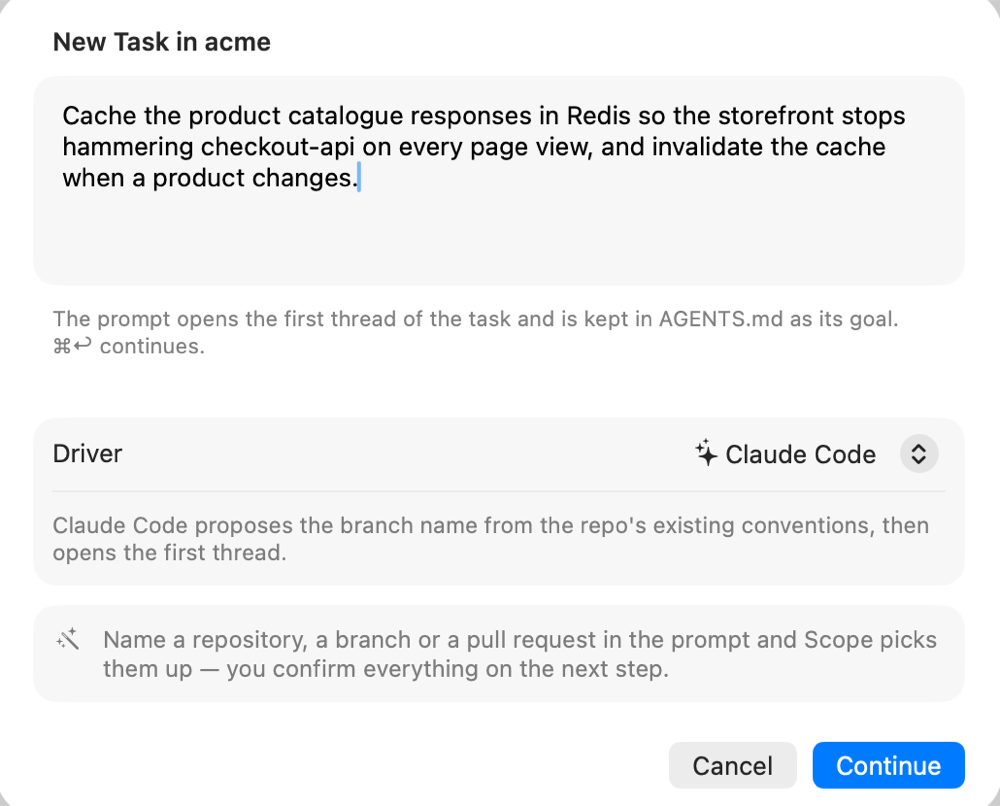
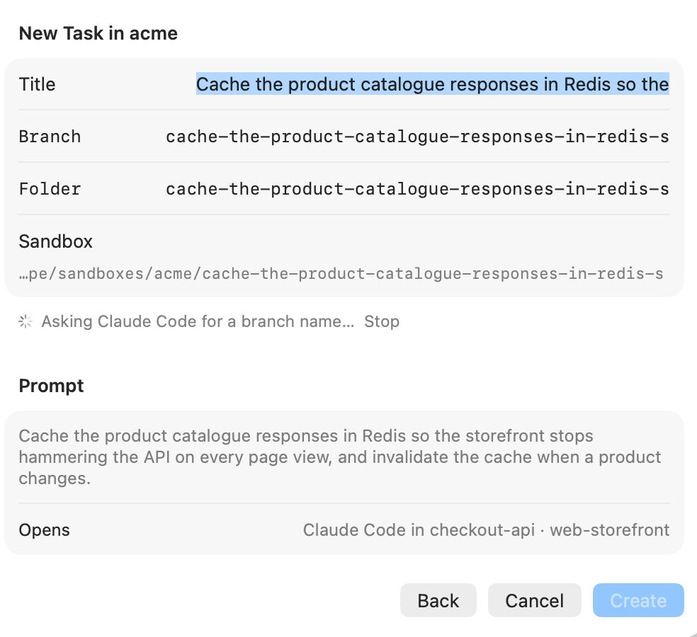
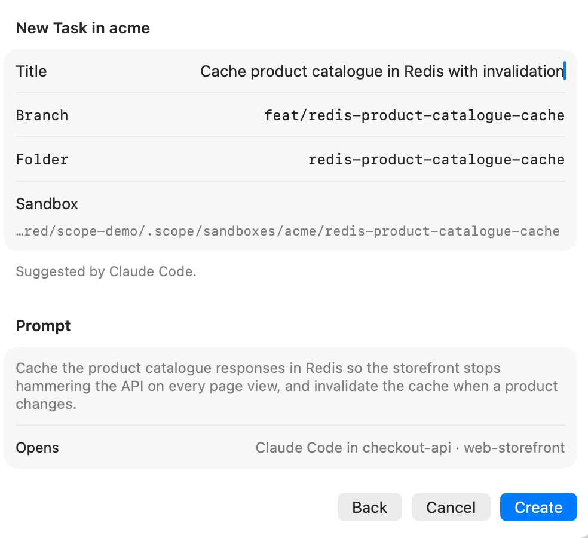
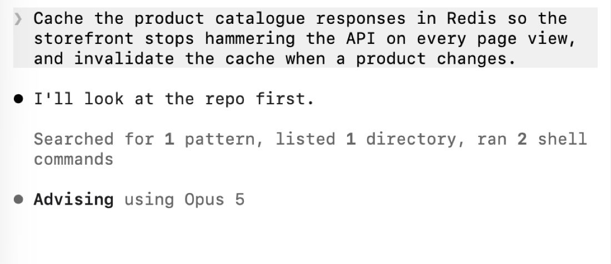

Tasks and sandboxes
A task is a prompt, a branch and one worktree per repository. You write the prompt; the driver names the branch the way your repository already names branches.
Creating a task
⇧⌘T, or New Task at the bottom of the sidebar. The first step asks for two things: what you want done, and which driver should do it. Nothing else — the repositories, the branch and the folder come from the prompt.

The prompt is not a throwaway: it opens the first thread of the task, and it is written into
AGENTS.md as the goal, so a later thread — or a different agent — still knows what this branch is
for.
What Scope reads out of the prompt
Continue reads the request before anything is created:
| In the prompt | What it becomes |
|---|---|
a pull request — …/pull/6613, owner/repo#6613, or #6613 in a single-repository scope | its repository, its head branch checked out, and the task bound to it |
a repository of the scope, by folder name, path or owner/repo | the repositories the task sandboxes |
| a branch that already exists | a start point that continues it instead of branching |
Repositories are matched on their origin remote, not on the folder name — a pull request of
acme-devops/acme-front finds the clone you keep in a folder called front.
Everything Scope worked out is shown on the second step and stays editable. A wrong branch name is a typo; a wrong repository is a worktree in the wrong place, so nothing is created from a guess you were not shown.
The driver proposes the branch
Press Continue and the selected driver answers one short question — a microsession: its light model, run once, with the repository's recent branch names and commit subjects as evidence, and the scope's repositories as the list it may choose from:

It answers with a title, a branch and a folder name that follow the convention already in use — if the repo
lives on feat/… and fix/…, so will the task; if it prefixes branches with a
username, so will the task. Scope validates the answer with git check-ref-format, sanitises it and
makes it unique.
It also says which repositories the work touches, and whether the request is about a pull request that
already exists. A microsession has read-only tools, so a request that only alludes to one — "rebase the auth PR
on front" — is enough: it finds the number with gh pr list and answers with the reference. Scope
then resolves that reference itself with gh pr view, exactly as it does for a pasted URL: the head
that gets checked out never comes from the model's own words, and an invented repository path is dropped rather
than corrected.

All three fields stay editable. What you type wins: a proposal that arrives after you started typing only updates the caption, never your text.
No headless driver, no network, driver too slow? Scope derives the branch itself:
the title from the first line of the prompt, the prefix from the dominant prefix among the existing branches, or
feat/ / fix/ inferred from the wording. The caption says which one you got and why.
There is no imposed scope/ prefix — a branch Scope creates looks like a branch you would have
created.
Continuing existing work
The Start from row decides what the sandbox is based on:
| Start from | Effect |
|---|---|
| A new branch | the proposed branch, off origin/<default> — the usual case |
| #6613 … | the pull request's head is checked out; a fork's head becomes pr/6613 |
| an existing branch | that branch is checked out, local copy first, origin/ otherwise |
In the last two the branch is the start point, so the Branch field goes read-only: nothing is created, the work continues where it was. A pull request lives in one repository, so a task on one sandboxes that repository alone. Starting a task on a pull request Scope already has a task for offers that task instead of a second sandbox.
A branch can only live in one working tree. If the branch you start from is already checked out — in the base clone, or in another task — Scope says so, and names the checkout holding it, rather than letting git fail.
Sandboxes
Create makes, for every selected repository, a git worktree on the task branch:
~/.scope/sandboxes/<scope-slug>/<task-slug>/
├── AGENTS.md # goal + one section per repository
├── <task-slug>.code-workspace
├── checkout-api/ # worktree on feat/redis-product-catalogue-cache
└── web-storefront/ # same branch, second repositoryYour own checkouts are untouched: they stay on whatever branch you left them on, and the task branch exists in the worktree. A single-repository scope puts the worktree at the task root itself.
The branch starts from the repository's base — origin/<default> when it can be resolved,
the local default branch otherwise.
Threads inside a task
Creating the task opens the first thread on the spot, in the sandbox, with your prompt already sent to the driver.

⌘T inside a task opens more threads in the same sandbox — a shell to run the tests next to the agent doing the work, a second agent on the same branch.
AGENTS.md
Scope writes a context file at the task root, generated from the prompt and the
graph: the goal, and one section per repository with its purpose, stack, setup and
test commands. Drivers that read a different file name (CLAUDE.md) get theirs instead — the
profile says which.
Archiving and closing
| Action | Effect |
|---|---|
| Archive | removes every worktree, keeps the branches and the record |
| Close… | removes the worktrees and the record; optionally deletes the branches |
Both refuse to run on a dirty sandbox unless you force them, and closing refuses to delete a branch that is not merged. Scope prunes stale worktrees on every launch.
Starting from a pull request
Two ways in, one result. Name the pull request in the prompt, or open it from the PRs tab, which
lists the open pull requests of a repository through gh. Either way the sandbox sits on the PR's
head branch — including a fork's head — the task is bound to the pull request, and you review and push back
without touching your own checkout.